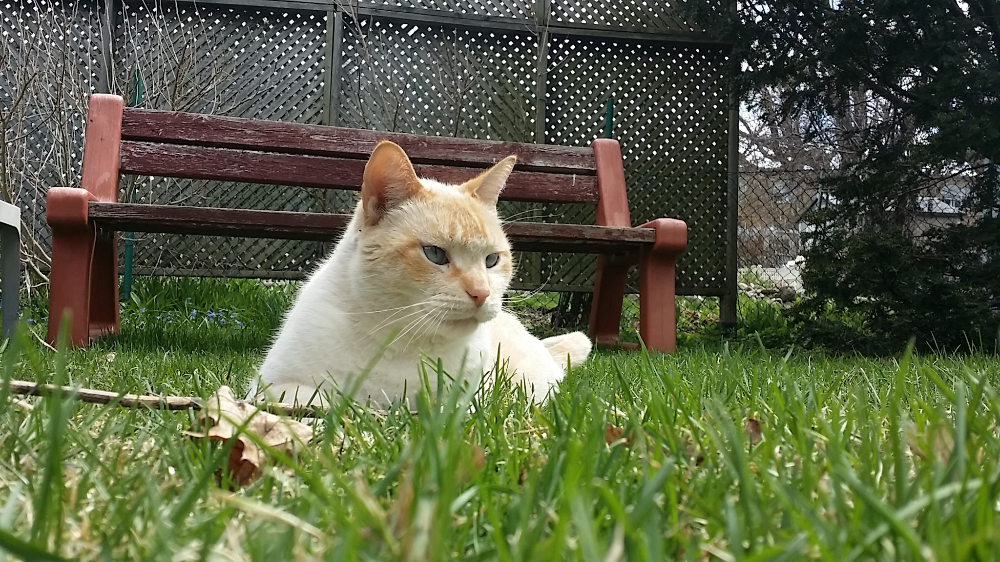

Snowball
The Salty Treat Connoisseur
{kind=link}
“Two things are infinite: the universe and human stupidity; and I'm not sure about the universe.” ― Albert Einstein
{kind=link}
“So many books, so little time.” ― Frank Zappa.
{kind=link}
“You only live once, but if you do it right, once is enough.” ― Mae West

“If you want to know what a man's like, take a good look at how he treats his inferiors, not his equals.” ― J.K. Rowling
{kind=link}
“If you tell the truth, you don't have to remember anything.” ― Mark Twain
{kind=link}
"There is something of the marvelous in all things of nature" - Aristotle
{kind=link}
“′Classic′ - a book which people praise and don't read.” ― Mark Twain
{kind=link}
“I don't think there is any truth. There are only points of view. ” ― Allen Ginsberg
{kind=link}
“It was a bright cold day in April, and the clocks were striking thirteen.” ― George Orwell, 1984
{kind=link}
“Life has no remote....get up and change it yourself!” ― Mark A. Cooper, Operation Einstein
{kind=link}
“The way to get started is to quit talking and begin doing. ” ― Walt Disney

"If you don't like the road you're walking, start paving another one" - Dolly Partons
{kind=link}
“Life is what happens to us while we are making other plans.” ― Allen Saunders
{kind=link}
“I like nonsense, it wakes up the brain cells. Fantasy is a necessary ingredient in living.” ― Dr. Seuss
{kind=link}
“Being deeply loved by someone gives you strength, while loving someone deeply gives you courage.” ― Lao Tzu
{kind=link}
“If you judge people, you have no time to love them.” ― Mother Teresa
{kind=link}
“Success is not final, failure is not fatal: it is the courage to continue that counts.” ― Winston S. Churchill
{kind=link}
“Life is like riding a bicycle. To keep your balance, you must keep moving.” ― Albert Einstein.
{kind=link}
“Some infinities are bigger than other infinities.” ― John Green
{kind=link}
“Do one thing every day that scares you.” ― Eleanor Roosevelt
{kind=link}
"Ah I see you're a man of culture as well." - Last Samurai

"0101001100100110011101010011101010101010101010001010101010" - Your computer's central processing unit.
{kind=link}
"What you do makes a difference, and you have to decide what kind of difference you want to make." - Jane Goodall
“It matters not what someone is born, but what they grow to be.” ― J.K. Rowling
“When one door of happiness closes, another opens; but often we look so long at the closed door that we do not see the one which has been opened for us.” ― Helen Keller
“You only live once, but if you do it right, once is enough.” ― Mae West
“A friend is someone who knows all about you and still loves you.” ― Elbert Hubbard
“We accept the love we think we deserve.” ― Stephen Chbosky
“Success is not final, failure is not fatal: it is the courage to continue that counts.” ― Winston S. Churchill.
“The difference between genius and stupidity is: genius has its limits.” ― Alexandre Dumas-fils
“Life is like riding a bicycle. To keep your balance, you must keep moving.” ― Albert Einstein
"The world is but a canvas for our imagination." - Henry David Thoreau
"Optimism is the faith that leads to achivement." - Helen Keller
“It is what you read when you don't have to that determines what you will be when you can't help it.” ― Oscar Wilde
“My greatest pain in life is that I will never be able to see myself perform live.” ― Kanye West
“We should live our lives as though Christ was coming this afternoon.” ― Jimmy Carter
“All you need is love. But a little chocolate now and then doesn't hurt.” ― Charles M. Schulz
“It is hard to fail, but it is worse never to have tried to succeed.” ― Theodore Roosevelt
“When you're at the end of your rope, tie a knot and hold on.” ― Theodore Roosevelt
“I am altering the deal. Pray I don’t alter it any further” - Darth Vader
"Step out of the history that is holding you back. Step into the new story you are willing to create." - Oprah Winfrey
“Serious literature does not exist to make life easy but to complicate it.” ― Witold Gombrowicz
“The truth is, everyone is going to hurt you. You just got to find the ones worth suffering for.” ― Bob Marley
"If more politicians knew poetry, and more poets knew politics, I am convinced the world would be a little better place in which to live." - John F. Kennedy
"Yesterday is history, tomorrow is a mystery, today is a gift of God, which is why we call it the present.” ― Bill Keane